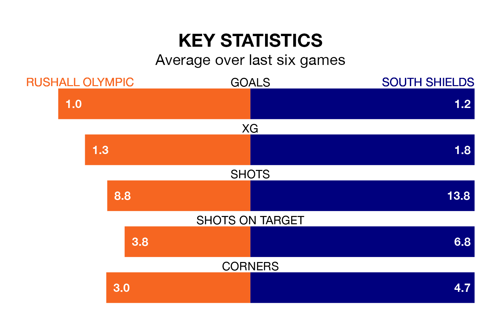

Rushall Olympic host South Shields in Saturday's match at Dales Lane looking to bounce back from defeat last time out in National League North and South.
Rushall Olympic, who sit zero in the league after 23 games, fell to a 3-1 away defeat to Scarborough Athletic on December 16.
They face a South Shields side who also lost their last match, a 2-1 defeat to Peterborough Sports, and who sit eighth in the table.
In Danny Waldron, Rushall Olympic have the league's sharpest shooter so far this season. He has notched 14 goals in 20 appearances.
His goal rate of one every 105 minutes is quicker than that of Paul Blackett, South Shields's top scorer with a goal every 143 minutes, and a total of 12 goals in 21 games.
With 36 goals in 22 games so far this season, the visitors are scoring more than average in the league with 1.6 goals per game. And they are conceding fewer than average, letting in 23 goals at a rate of 1.0 per game.
The home team, meanwhile, are below average scorers, with 1.3 goals per game, compared to a league average of 1.4. They have conceded 1.6 goals per game.
Rushall Olympic are in disappointing form in National League North and South, with one win and three draws from their last six games.
With two wins and a draw over that period, South Shields's form is slightly better – they have taken seven points from 18, compared to Rushall Olympic's six.
